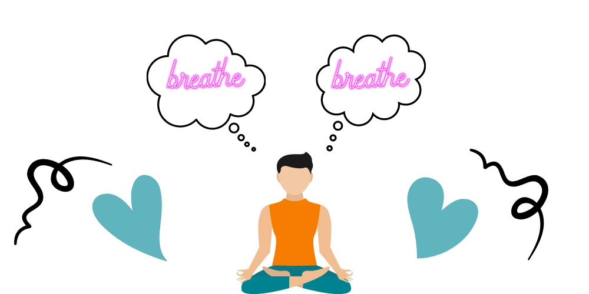
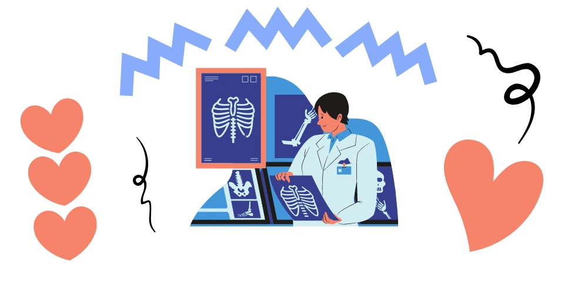

Mindfulness is the state of being aware of our present situation. That is to say, anything and everything that happens around us can trigger feelings. This creates a sense of awareness that helps us process situations. The mindfulness of our surroundings, and our ability to process situations with sense and sensibility, is our power. However, our mindfulness about people and situations does affect our attitude. Therefore, the cultivation of an attitude of mindfulness is highly encouraged. So, how do we practice being mindful? How do we cultivate a pro-active attitude as opposed to being reactive one? In short, there are seven 7 Foundational Attitudes to Mindfulness Practice to learn. In addition, we’ve added 7 mindfulness techniques
If done consistently, this can awaken our core power, the ability to digest our reaction to people or situations that may be unhelpful.

7 Foundational Attitudes to Mindfulness Practice
1. Non-Judging Ideology
Our attitude to assess and judge, at times, endlessly comes naturally to our minds. Most importantly, it is part of our evolutionary development. In other words, being able to assess is necessary to get through life. It is also needed for our flight response to danger or threat. However, judgments on a personal level can become repetitive and unhelpful. It may also lead to a feeling or an attitude of, “not being good enough.“
So, what is “Non-judging” ideology all about? In short, it is about becoming an “impartial witness” through our experience. This will help us develop an awareness of our tendency to constantly judge ourselves, the experiences we have had, and those of others. Mindfulness practices would allow us to pay attention but from a more neutral point of view. It’s alright to be curious, but let the judgments go!
2. Increased Tolerance, Patience
Allow things to unfold in their own time, practice patience. It is the act of understanding that things will happen when they are supposed to happen. It is also understanding that the results we desire may not come soon or fast enough, but we must be patient. Patience is about being generous with yourself. Allow yourself permission to take the time and space that is needed for mindful practices, lesson the attachment to any presumed outcome. Let things unfold naturally.
3. See for the First Time, Beginner’s Mind
Sometimes, we do let our beliefs or what we know blind us. Therefore, we allow things to smear our vision from seeing things just as they are. Certainly, mindfulness practices teach us to try to cultivate a “beginner’s mind.” This practice tries to teach us how to see everything as if we were seeing it for the very first time – without any preconceived assumptions or expectations. New perspectives may lead to new beginnings.
4. Credence and Trust
Developing basic trust in yourself and your feelings is integral to meditation training. It’s better to trust your own intuition, even if you make some mistakes along the way than to always look outside yourself for direction. Be open and receptive to what you can learn from other sources, but ultimately, the intention is to find your own wisdom from within and to trust in that unfolding.
5. Non-Striving
Though meditation takes a certain kind of work and energy, essentially it is non-doing. We may say to ourselves, “if only I could relax, be a better meditator, have a healthier body, etc. Then I would be ok.” Instead, suggest maybe “right now, I’m ok being just as I am.”
Above all, non-striving is not the same as no effort. It’s more about being present with intention whilst letting go of the results. Moreover, this is the most difficult out of the 7 attitudes of mindfulness. Hence, we should remember that as much as possible everything we do, we must do with a purpose or a goal in mind.
Whatever your present physical, emotional, or spiritual state. If you don’t want to remain stuck in a frustrating, vicious cycle of wanting things to be different. Therefore, you can realise that now is the time for a change. Remember, this is the only time you have for anything. However, an important caveat to acceptance is that it does not mean that you have to like everything, or that you have to take a passive attitude and abandon your principles. It is simply a willingness to see things as they are right now. We remind ourselves to be receptive and open to whatever we are thinking, feeling, or seeing, and accept it because that is the key to change, healing, and sustainable growth.
7. Let Life Happen, Let Go
As we start paying attention to our inner experiences, we discover a pattern of certain thoughts, feelings, or past experiences that the mind seems to want to hold on to. In other words, if they are pleasant, we try to prolong and stretch them out, bringing them up – again, again, and again. But if they are unpleasant, we may try to get rid of them, or protect ourselves from them by pushing them away – again, again, and again.
In meditation practice, we put aside our tendency to elevate the good aspects of our experience and reject the not so good aspects. When we become aware of the mind’s impulses to dwell, grasp, or push away, we recognize them and choose not to pursue them any further. We just observe and let go, or notice, and let things be. Meanwhile, imagine what some aspects of life would be like if you could let go or let things be?
Meditate Towards Mindfulness
Many seem to believe that meditation can produce positive results. They say that it strengthens the mind and reduces stress. There are several more advantages that can be gained through meditation. Meditation is thought to boost the immune system, rejuvenate the mind and improve relationships. Now that we have learnt 7 Foundational Attitudes to Mindfulness Practice. Below are a few meditation techniques that we can all try for ourselves:
The Five (5) Senses
Tapping the 5 senses is the foundation for bodily meditation. Notice five things you can see, four things that you can feel, three things you can hear, 2 things you can smell, and one thing you can taste.
Breathing Exercises
This is the simplest and most preferred by those who find solace in sitting, laying down, or standing. We begin by taking deep and long breaths. Breathing will be done through the nose, held in 6 counts, and exhaled slowly through the mouth. For instance, if we have just begun doing this exercise, one minute would be enough. Likewise, for those who’ve been doing this for a while, it is within our discretion as to how long we wish to do this breathing exercise.
Body Scan
We can do this exercise by laying down flat on the floor. And then, we can imagine or think vividly of doing a mental scan of our body. After that, as we breathe, we think of how our body feels at present. We will notice areas of our body that feel sore, heavy, and cramped. However, a lack of feeling may be noticed in some parts of our body. Furthermore, we should not neglect any part of our body during the scan. Because this activity will require a long regulated concentration.
Mindful Listening
The intent of this activity is that try to focus on the sounds we hear. In addition, deep concentration is required. Let us not allow our minds to wander. Certainly, we must stay focused and listen to the sounds that we hear around us. We can even choose to listen to our favourite music or hymn, perhaps naturally occurring sounds or dedicated messages.
Mindful Eating
Have you heard of the term, “raisin exercise?” If not, and believe it or not, the object of focus is a raisin. However, other foods or fruits can be used as well. Note that for this exercise, we observe the food like never before. We touch it, smell it and taste it, taking time to actually savour every feeling or emotion we get from this exercise.
Mindful Appreciation
Think of five things that usually go unnoticed and unappreciated in your daily life. At times, people and things in our daily life go unappreciated. The objective of this exercise is for us to give thanks and to be mindful of all the things we have in our life.

The Observer
It is a meditation practice that connects a person with his or her natural environment. The observation of this method is done by selecting an item from our surroundings. We try to focus on it. Last but not least, we explore the object of our choice, all aspects of it. We divert our mindset and think that as if we are seeing it for the first time. We try to observe everything about our object of choice, the colours, its pattern, and even texture.
Wisdom is that capacity to see things as they really are. Definitely, if we decide on this challenge, our mindfulness attitude would grow.
The 7 Foundational Attitudes to Mindfulness Practice. The more we do it, the better we get at it.